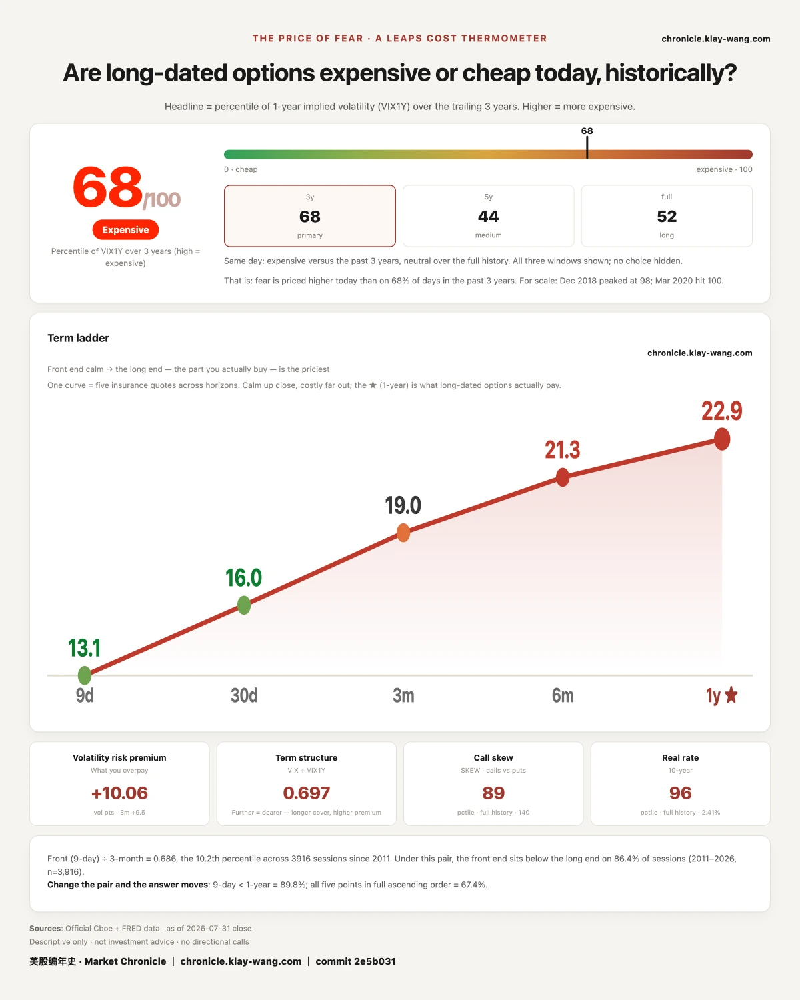
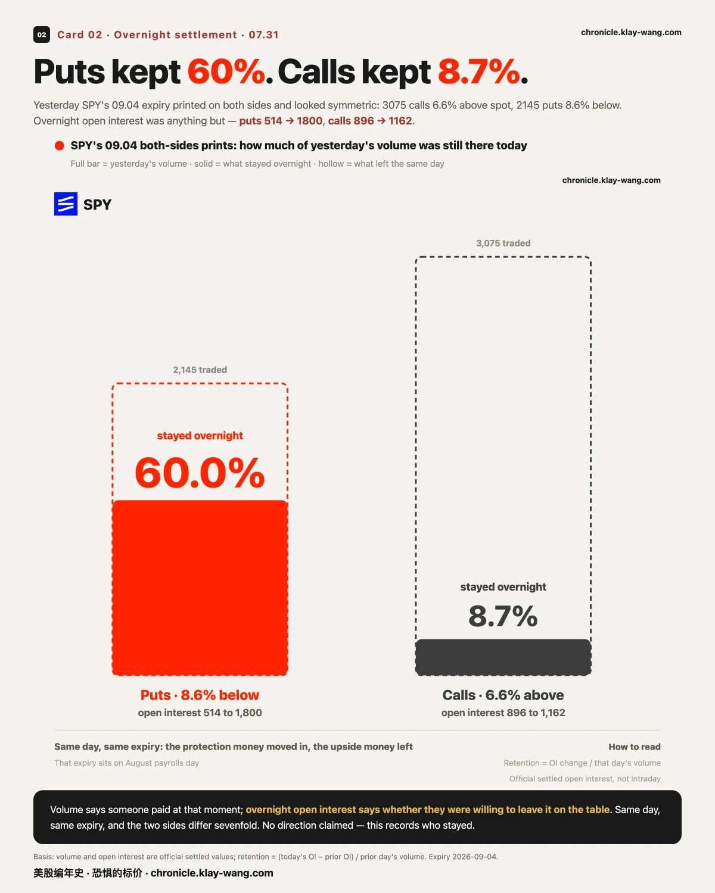
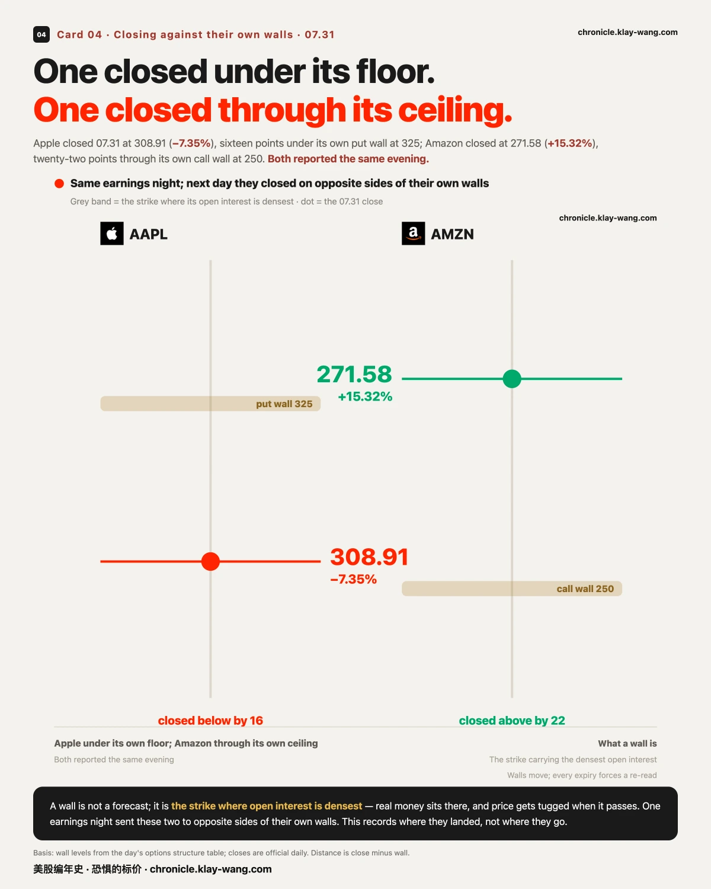
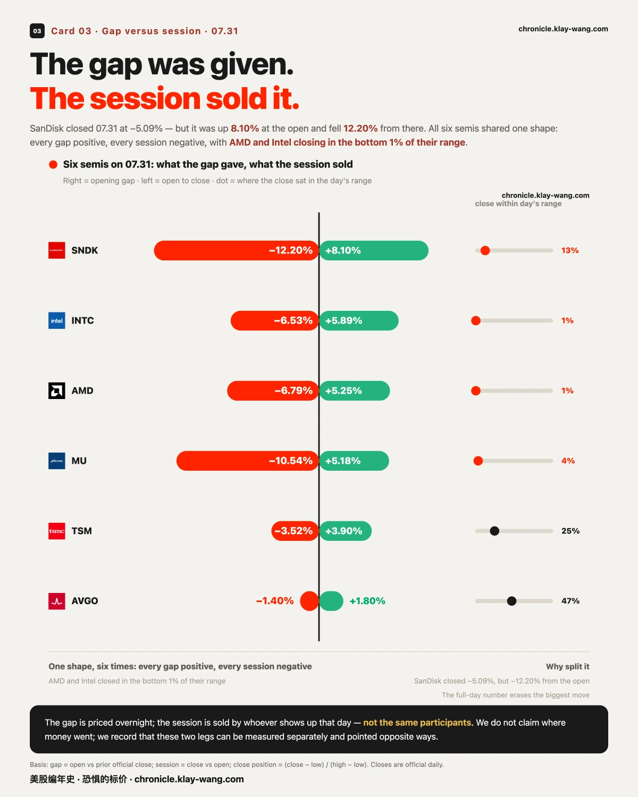

7 月最后一个交易日， 看跌的钱留下了，看涨的钱走了· 07-31 · 7.27-7.31
Apple closed −7.35% below its own put wall; Amazon closed +15.32%, sixteen points above its call wall — same earnings night, opposite mornings
Semiconductors gave back every gap: SanDisk was up 8.10% at the open and closed −5.09%; AMD and Intel both closed in the bottom 1% of their daily range

1 · Two of yesterday's four bets settled
Settlement is why this ledger exists, so start with the two that never will.
Yesterday we logged four fresh bets and printed the test in advance: overnight open interest rises, someone camped; flat, it was churn. SPY's 09.04 expiry looked symmetric yesterday — 3075 calls 6.6% above spot, 2145 puts 8.6% below. Overnight it was anything but: puts went 514 → 1800, keeping 60% of yesterday's volume; calls went 896 → 1162, keeping 8.7%. Same day, same expiry: the protection money moved in, the upside money left before the close. That expiry still sits on August payrolls day.
Microsoft's put band was the heavier print. At the 450 line, 08.07 open interest went 13 → 2271 and 08.10 went 1 → 1724 — while the stock rose 3.02% to 464.72. Built on the way up, and left in place.
The other two have no answer and never will. Intel's four-leg stack and Micron's seven-strike call ladder were same-day expiries: the only window to check sits between overnight settlement and delisting, and our collection did not cover it. The verdict is "unmeasurable" ,not confirmed, not denied. The process fix is filed: when the bet is on a same-day expiry, the settlement check has to be scheduled into that same day.

2 · The data did not move it; the level did
At 08:30, employment costs landed and SPY moved 0.6 points. The real sequence came after the bell: it opened at 744.69, ran to 746.30 within five minutes,0.31 points below its own gamma flip at 746.61 and turned. Over the next forty minutes it lost 8.6 points to 737.69; the 09:35 bar carried the day's heaviest volume, 7.7 times the opening bar, cutting through the prior close, the put peak at 743 and the put wall at 740 on the way down. Then the afternoon took all of it back: 747.03, above the flip, +0.72% on the day.
In one line: today's candle was drawn by a handful of levels, not by the release. We cannot see who sold and we do not forecast where it goes; what we can say is where it was refused, and where it closed.

3 · Same earnings night, opposite mornings
Apple closed −7.35% at 308.91, under its own put wall at 325. Amazon closed +15.32% at 271.58, sixteen points through its call wall at 250. Both reported the same evening.
The options money was on the right side of both: Apple's 07.31 put band (310 to 330, four strikes) and Amazon's 07.31 call band (245 to 265, five strikes) all finished in the money. That describes a settlement that has happened, not a level that holds tomorrow. Elsewhere: Microsoft +3.02% above its 460 call wall, Alphabet +6.73% above 335.

4 · The gap was given; the session sold it
The full-day number hides the biggest move of the day. SanDisk finished −5.09% but it was up 8.10% at the open, and fell 12.20% from there. Micron gapped +5.18%, fell 10.54% from the open, closed −5.90%.
The close tells it best: AMD and Intel both finished in the bottom 1% of the day's range, Micron at 4%, SanDisk at 13%. Six semis, one shape: every gap positive, every session negative. Microsoft ran the opposite way, flat open, all 3.27% earned intraday, closing at 88% of its range.
We do not call this rotation. That claim needs flow data we do not have. What we can say is that both happened on the same day.

5 · No conviction prints today
We broke the five largest premium prints into 30-minute volume and asked how much sat in the heaviest bar: Microsoft's 460 calls ($28.8M) peaked at 31.8%, AMD's 490 puts ($21.4M) at 33.9%, the rest lower. All five under the 70% line: accumulated across the day, not decided in a moment.
One shape worth filing: on both the 09.30 and 10.16 expiries, SPY printed three equidistant deep out-of-the-money put strikes in a 1:2:1 ratio ,$100 apart, the middle strike's volume matching the two wings to within 0.1%. That is butterfly geometry, twice, identically. No direction claimed: without trade side and leg prices, bought and sold butterflies look the same. Open interest tomorrow settles it, and it is filed for 08.03.

Thermometer
My fear thermometer measures one thing: how much the market pays, right now, to insure the next year. The dearer the insurance, the more afraid the market.
Today it reads 68.5 out of 100, dearer than 68.5% of the past three years, against 70.6 yesterday. It is July's lowest reading. The month opened at 73.5, ran to 88.4 on Fed day, and closed here. Every one of the loudest four reported this week, and the price of insuring the year ahead finished the month at its cheapest.
No investment advice. No direction calls. No market timing.